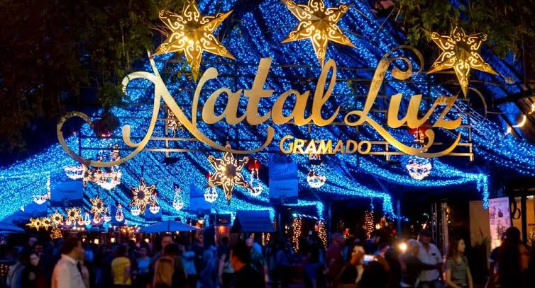
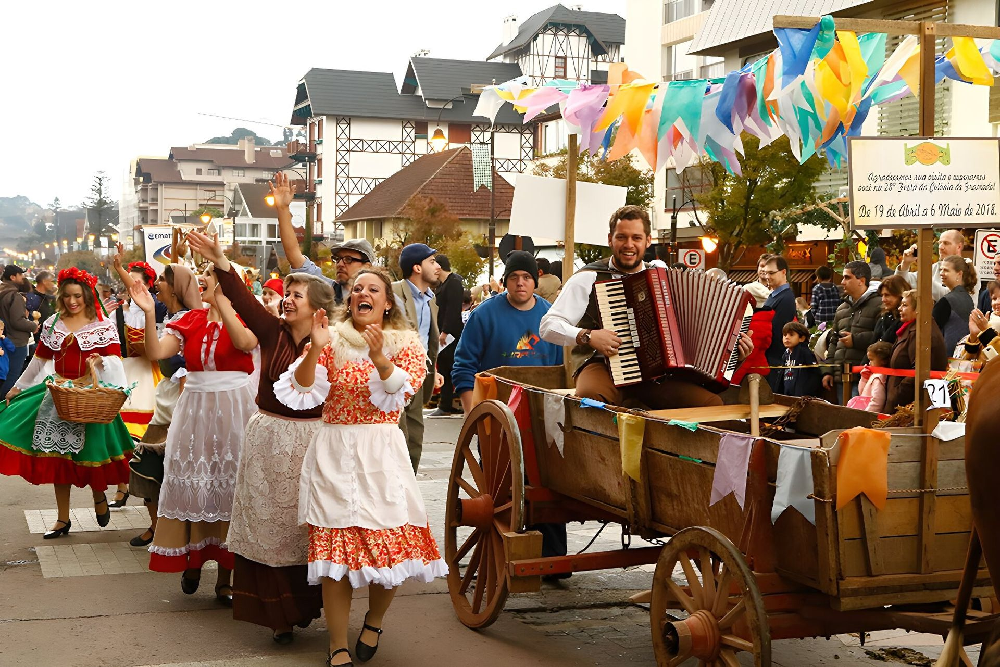
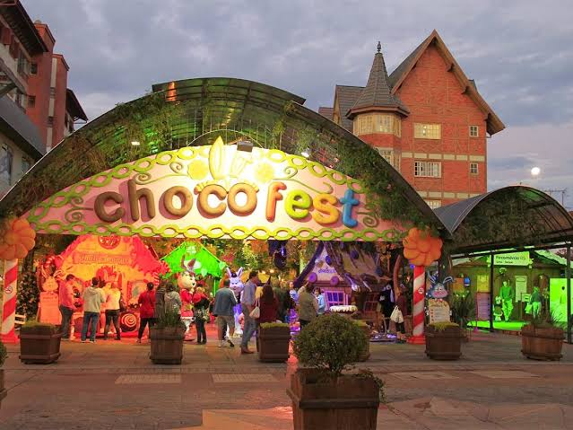

Rua Coberta & Palácio dos Festivais
O coração social de Gramado, repleto de bistrôs, restaurantes e cafés charmosos, localizado bem em frente ao palco do famoso Festival de Cinema.
A capital do charme na Serra Gaúcha, famosa pela arquitetura europeia e grandes eventos
Localizada na charmosa Região das Hidrângeas na Serra Gaúcha, Gramado é um dos destinos turísticos mais cobiçados do Brasil. Com forte influência da colonização alemã e italiana, a cidade se destaca por sua arquitetura em enxaimel, ruas floridas, gastronomia requintada e clima ameno ao longo de todo o ano.
Famosa por seus fondues, fábricas de chocolate artesanal e parques temáticos únicos, Gramado oferece uma experiência europeia dentro do Brasil, combinando organização exemplar, segurança e eventos espetaculares de porte internacional.
O coração social de Gramado, repleto de bistrôs, restaurantes e cafés charmosos, localizado bem em frente ao palco do famoso Festival de Cinema.
Um dos cartões-postais mais românticos da cidade, cercado por árvores importadas da Floresta Negra alemã e pedalinhos em formato de cisne.
Um parque ao ar livre impressionante formado por réplicas em miniatura fiéis de construções do Brasil e do mundo, ricas em detalhes e histórias.
O primeiro parque de neve indoor das Américas, permitindo aos visitantes praticar esqui, snowboard e brincar na neve de verdade em qualquer época do ano.
Estimativa de custos voando até Porto Alegre (POA) ou Caxias do Sul (CXJ), com translado para a serra:
| Categoria | Tipo de Voo / Serviço | Preço Médio (Ida e Volta) | Vantagens |
|---|---|---|---|
| Econômica / Promoção | Voo com antecedência ou conexões, sem bagagem despachada | R$ 480,00 – R$ 800,00 | Custo reduzido para quem viaja leve e planeja com antecedência. |
| Intermediária / Conforto | Voo direto em horário nobre, inclui bagagem de 23kg | R$ 890,00 – R$ 1.450,00 | Comodidade para despachar roupas de frio pesadas sem surpresas. |
| Premium / Executiva | Classe Premium Economy/Executiva com check-in prioritário | R$ 1.900,00 – R$ 3.300,00 | Acesso à sala VIP, conforto superior e prioridade no embarque. |

O maior evento natalino da América Latina. Durante os meses de fim de ano, a cidade se transforma com desfiles cenográficos, acendimento das luzes, concertos e espetáculos flutuantes nos lagos.

O mais prestigiado e tradicional festival audiovisual do país, realizado no Palácio dos Festivais, reunindo celebridades e premiando os melhores filmes ibero-americanos com o cobiçado troféu Kikito.

Celebração cultural das origens de Gramado, onde agricultores e descendentes de imigrantes alemães, italianos e gaúchos oferecem danças típicas, artesanato e pães e cucas assados na hora em fornos de barro.

Evento que transforma as avenidas em um universo lúdico de chocolate artesanal, com paradas de coelhos, oficinas gastronômicas e decoração temática em cada esquina.